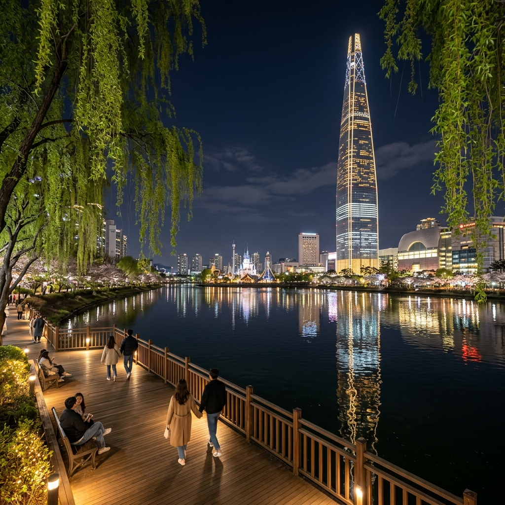
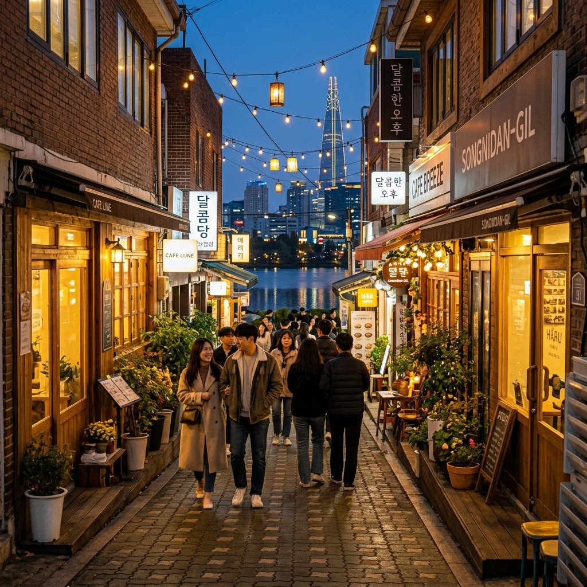
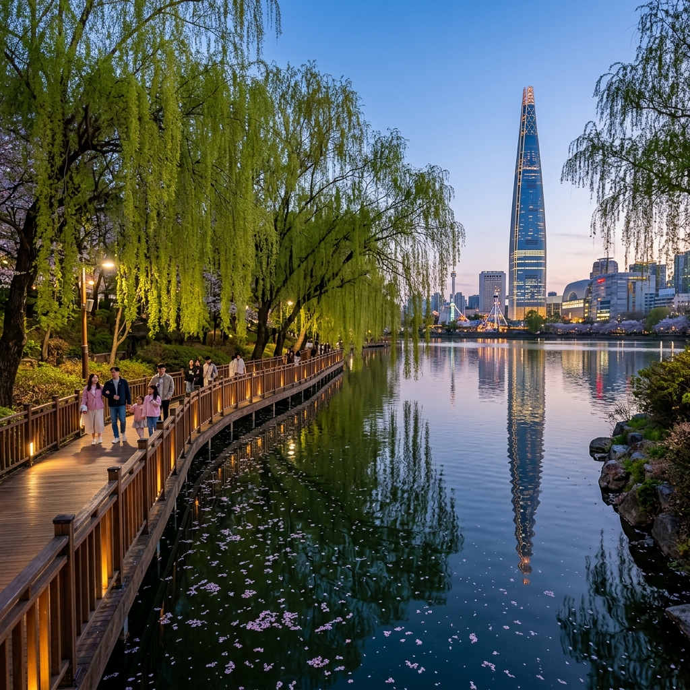

송리단길·석촌호수 봄밤 코스
잠실 야경 카페 동선과 대중교통으로 가는 법
서울 잠실 한복판에 이런 야경이 숨어 있다는 사실을 모르는 분이 생각보다 많습니다.
석촌호수는 한강과 이어져 있던 옛 강줄기가 1970년대 잠실 개발 과정에서 분리되어 생긴 인공 호수입니다. 동호와 서호 두 개의 호수로 나뉘며, 수면 위로 솟은 롯데월드타워(555m)의 반영이 밤이면 더욱 선명하게 비쳐 서울에서 손꼽히는 야경 명소로 자리매김했습니다.
송리단길은 석촌호수 동쪽 담장을 따라 이어지는 골목으로, 최근 몇 년 사이 독립 카페와 감성 레스토랑이 밀집하면서 '잠실의 경리단길'이라는 별명을 얻었습니다. 봄밤이면 호수 수면에 반사된 타워 불빛, 수양버들의 새싹 향기, 카페에서 흘러나오는 음악 소리가 한데 어우러져 서울에서 가장 낭만적인 야간 산책지가 됩니다.
이 가이드는 석촌호수 동·서호 야간 산책 루트와 송리단길 카페 골목을 하루 저녁에 모두 즐기는 봄밤 최적 동선을 제안합니다. 지하철 한 번으로 접근 가능하고, 주차 걱정 없이 즐길 수 있는 도심 야경 코스입니다.
| 항목 | 내용 |
|---|
| 위치 | 서울특별시 송파구 석촌호수로 일대 (동호·서호) |
| 지하철 | 8호선 석촌호수역 1·2번 출구 / 2호선 잠실새내역 4번 출구 |
| 주차 | 송리단길 일대 주차 매우 협소 — 대중교통 강력 권장 |
| 추천 시간 | 오후 6시~10시 (일몰 후 타워 조명 점등 시점이 최적) |
| 소요 시간 | 야간 산책 1.5~2시간 + 카페 1~2곳 = 총 3~4시간 |
| 입장료 | 석촌호수 산책로 무료 개방 (연중) |
| 최적 시기 | 4~6월 봄·초여름 / 야간 기온 15~22도 구간 |
1. 석촌호수는 어떤 곳인가 — 잠실 개발이 낳은 도심 야경 명소
석촌호수의 탄생은 1970년대 잠실 대개발 프로젝트로 거슬러 올라갑니다.
본래 이곳은 한강 본류와 이어지는 옛 강줄기였습니다. 잠실 섬 개발을 위해 한강 물줄기를 직선화하는 공사가 진행되면서, 원래 강줄기였던 곳이 내륙으로 고립되어 호수가 되었습니다. 동호와 서호로 나뉜 것도 그 과정에서 자연스럽게 이루어졌으며, 두 호수를 합친 수면적은 약 21만㎡에 달합니다.
석촌호수가 전국적인 명소로 주목받기 시작한 결정적 계기는 롯데월드타워의 완공(2017년)입니다. 높이 555m의 타워가 호수 바로 서쪽에 세워지면서, 수면에 타워 전체가 반영되는 장관이 연출되기 시작했습니다. 낮에는 하늘을 배경으로 우뚝 솟은 타워를, 밤에는 반짝이는 창문 불빛이 물 위에 길게 뻗은 장면을 담을 수 있어 인스타그램 명소로 급부상했습니다.
봄이 되면 석촌호수는 또 다른 얼굴을 보여줍니다. 호수 둘레를 따라 심어진 벚나무들이 분홍빛 꽃잎으로 터널을 이루고, 꽃잎이 수면 위로 떨어져 물빛을 물들이는 장면은 서울에서 보기 드문 봄 풍경입니다. 꽃잎이 지고 나면 수양버들의 연초록 잎이 그 자리를 채우며, 6월까지 호수 산책의 계절감을 이어 줍니다.
호수 둘레길은 총 약 2.5km로 걷기에 부담이 없습니다. 경사가 거의 없는 평지 코스라 어린아이부터 노인까지 편안하게 걸을 수 있고, 중간중간 벤치와 조명 시설이 잘 갖추어져 있어 야간 산책 시에도 안전합니다.
2. 찾아가는 법 — 지하철·버스 동선과 최적 출입구
석촌호수와 송리단길을 방문하는 가장 현명한 방법은 단연 지하철입니다.
지하철 이용 시 서울 지하철 8호선 석촌호수역에서 내리면 됩니다. 1번 출구로 나오면 곧바로 동호(東湖) 남쪽 입구가 연결되고, 2번 출구는 송리단길 메인 골목으로 이어집니다. 석촌호수역은 강남·잠실·홍대·명동 등 어느 방면에서도 환승 1~2회면 닿을 수 있는 편리한 위치입니다. 2호선 잠실새내역 4번 출구를 이용하면 동호 북쪽에서 시작해 시계방향으로 호수를 한 바퀴 도는 코스로 진입할 수 있어, 타워 반영 뷰를 먼저 감상하며 걷고 싶다면 이쪽이 낫습니다.
버스 이용 시 잠실역·잠실새내역 정류장을 경유하는 광역·간선버스 다수가 있습니다. 송파대로 방향에서 접근한다면 석촌호수 북쪽 정류장에서 바로 하차하면 됩니다. 강남 방면에서는 탄천로 버스를 이용해도 5분 내 도보로 접근 가능합니다.
자가용 이용 시 주의가 필요합니다. 석촌호수 주변에는 공영주차장이 매우 한정적이고, 주말 저녁에는 호수 반경 500m 이내 주차장 대부분이 만차 상태가 됩니다. 롯데월드 주차장(유료)이 가장 크지만, 매몰 비용과 혼잡을 고려하면 대중교통이 압도적으로 효율적입니다. 불가피하게 차를 가져온다면 석촌동 골목 공영주차장(석촌호수로 동쪽)을 노려보시되, 오후 5시 이전 입차를 권장합니다.
💡 봄밤 방문 황금 타이밍: 오후 6시 30분~7시 도착 → 일몰 직후 타워 조명 점등 시점에 수면 반영이 가장 선명합니다. 오후 8시 이후에는 인파가 다소 줄어 산책이 쾌적해집니다.
3. 석촌호수 동호 야간 산책 — 타워 반영의 황금 각도
석촌호수는 동호(東湖)와 서호(西湖)로 나뉘는데, 롯데월드타워의 반영을 가장 극적으로 감상할 수 있는 곳은 동호입니다.
동호 남쪽 수변에 서면 타워 전체가 수면에 고스란히 반영됩니다. 조용한 날이라면 호수가 거울처럼 완벽히 타워를 담아내고, 약한 바람이 불 때는 물결이 타워 빛을 잘게 부수어 반짝이는 조각 빛의 향연을 만들어 냅니다. 어느 쪽이든 사진이 잘 나옵니다.
동호 동쪽 산책로를 따라 북쪽으로 걸어가면 석촌호수 수변 덱이 있습니다. 수면보다 살짝 낮은 위치에 설치된 덱에서 바라보는 야경은 마치 물 위에 떠 있는 느낌을 줍니다. 이 덱 구간이 이른바 '인생샷 명당 1순위'로 SNS에서 자주 언급되는 지점입니다. 오후 8~9시 사이 방문하면 조명과 반영의 조화가 가장 아름답습니다.
동호 북쪽으로는 롯데백화점 잠실점과 연결되는 통로가 있고, 주말에는 이 일대에 스낵카와 푸드트럭이 종종 등장합니다. 호수를 바라보며 간식을 즐기는 것도 봄밤의 낭만을 배가시키는 방법입니다.

석촌호수 동호 야경 — 롯데월드타워 반영이 수면을 가득 채우는 봄밤의 풍경 / AI 제작 이미지
4. 석촌호수 서호 수변길 — 수양버들과 봄꽃이 어우러지는 산책로
서호(西湖)는 동호보다 면적이 약간 작지만, 수변 식생이 더 풍성하게 조성되어 있어 산책의 즐거움으로는 오히려 서호가 앞섭니다.
서호 수변길을 걷다 보면 가장 먼저 눈에 들어오는 것이 호수 위로 늘어뜨린 수양버들입니다. 봄이면 연초록 버들가지가 수면에 닿을 듯 길게 늘어지고, 바람이 불 때마다 일렁이는 모습이 마치 한 폭의 동양화 같습니다. 6월 초까지 이 수양버들의 싱그러움이 유지되어 봄부터 초여름까지 방문해도 실망하지 않습니다.
서호 북쪽 구간에는 잠실 롯데월드 어드벤처 쪽에서 내려다보이는 시야가 열려 있어, 놀이공원의 화려한 야간 조명과 호수가 함께 프레임에 들어오는 독특한 뷰 포인트가 존재합니다. 이곳은 SNS에서 많이 알려지지 않아 상대적으로 조용하게 사진을 찍을 수 있는 장점이 있습니다.
서호 남쪽으로는 석촌호수 생태 습지 구간이 조성되어 있습니다. 갈대와 수련이 자라는 이 구간은 도심에서 보기 드문 작은 생태 섬처럼 기능하며, 봄밤이면 개구리 울음소리가 들려오기도 합니다. 산책로 조명이 적당히 은은하게 설치되어 있어, 대형 호수 반영 야경보다는 자연 친화적인 분위기를 선호하는 분들에게 잘 맞는 구간입니다.
동호에서 시작해 서호까지 한 바퀴 도는 데 걷는 속도에 따라 45분~1시간 20분이 걸립니다. 이 코스를 마친 후 송리단길로 진입하면 하루 저녁을 충실하게 채울 수 있습니다.
5. 송리단길 카페 골목 탐방 — 구역별 특색과 추천 동선
석촌호수 동쪽 담장을 따라 이어지는 송리단길은 공식 지명이 아니라 '송파 경리단길'을 줄인 애칭으로, 주로 석촌호수역 1~2번 출구 인근부터 잠실역 사이의 골목을 통칭합니다.
송리단길은 크게 세 구역으로 나뉩니다. 첫 번째 구역은 석촌호수역 2번 출구에서 송파대로 방향으로 이어지는 메인 골목입니다. 2층짜리 한옥을 개조한 브런치 카페, 유럽풍 디저트 가게, 수제 맥줏집이 골목 양편에 빼곡하게 들어서 있어 가장 번화한 구간입니다. 저녁 6시 이후에는 자리를 잡기 위해 웨이팅이 생기는 곳들이 많으므로 평일 방문이나 영업 전 예약을 권장합니다.
두 번째 구역은 석촌호수 동쪽 담장 바로 옆을 따라 이어지는 좁은 골목입니다. 여기서는 카페 창문 너머로 호수가 직접 보이는 '레이크뷰 카페'들을 찾을 수 있습니다. 소규모 독립 카페들이 운영되며, 창가 좌석에서 호수와 타워를 바라보며 음료를 즐기는 경험은 다른 곳에서 찾기 어렵습니다.
세 번째 구역은 잠실새내역 방향으로 올라가는 주거 골목 안쪽입니다. 겉으로는 평범한 주택가처럼 보이지만, 골목 안으로 들어서면 숨은 감성 공간들이 자리잡고 있습니다. 간판이 작고 내부가 보이지 않는 '시크릿 카페' 형태가 많아 인스타그램에서 발견하거나 현지인의 추천으로 찾아가는 방식이 일반적입니다.

송리단길 카페 골목의 저녁 풍경 — 따뜻한 조명이 물드는 좁은 골목길 / AI 제작 이미지
6. 봄밤 인생샷 포인트 5선 — 구체적 촬영 위치와 시간대
석촌호수와 송리단길에는 SNS에서 자주 등장하는 명당들이 있습니다.
포인트 1 — 동호 남쪽 수변 덱: 타워 반영이 가장 완전하게 담기는 정면 뷰 포인트입니다. 석촌호수역 1번 출구에서 호수 방향으로 직진해 300m 들어가면 됩니다. 오후 7시 30분~9시 사이가 최적 타이밍이며, 스마트폰 야간 모드나 DSLR 삼각대 셋업이 빛을 발하는 자리입니다.
포인트 2 — 서호 북동쪽 모서리: 롯데월드 어드벤처 야간 조명과 서호 수면이 동시에 프레임에 들어오는 복합 야경 포인트입니다. 놀이기구 불빛과 자연 호수면의 조합이 독특한 감성을 만들어 냅니다.
포인트 3 — 동호 수양버들 구간: 낮에는 벚꽃 명소로 유명하지만, 봄밤에는 수양버들 가지 사이로 타워 불빛이 아른거리는 장면이 연출됩니다. 장노출 촬영 시 버들 가지가 실루엣으로 강조되어 독특한 미감이 납니다.
포인트 4 — 레이크뷰 카페 창가: 카페 안에서 유리창 너머 호수 야경을 배경으로 음료잔을 놓고 찍는 구성이 SNS에서 인기 있습니다. 카페 섭외가 필요하지만, 상대적으로 조용하고 사적인 공간에서 여유 있게 찍을 수 있습니다.
포인트 5 — 송리단길 골목 조명 스트리트뷰: 골목 조명이 켜지는 오후 6시 이후, 골목 한쪽 끝에서 반대쪽 끝을 바라보며 찍으면 원근감이 살아나는 스트리트뷰 사진이 완성됩니다. 사람이 적은 평일 오후 6~7시 사이가 촬영에 유리합니다.
7. 잠실 야식·먹거리 가이드 — 산책 후 허기를 채우는 코스
석촌호수 산책과 송리단길 카페 탐방을 마쳤다면 본격적인 야식 시간입니다.
석촌호수 주변에서 가장 쉽게 접할 수 있는 먹거리는 호수 북쪽 롯데월드 상업 시설 주변의 푸드코트와 프랜차이즈 레스토랑입니다. 간편하게 한 끼를 해결하기에 좋으며, 가족 단위 방문이라면 롯데월드몰 내 다양한 선택지가 있습니다.
송리단길 골목 자체에도 식사 가능한 공간들이 여럿 있습니다. 파스타나 피자 같은 서양식부터, 국내산 식재료를 활용한 한식 정식, 수제 버거까지 취향에 맞는 선택이 가능합니다. 대부분 1인당 1만 5천 원~2만 5천 원 안팎의 가격대를 형성하고 있습니다.
가볍게 야식을 즐기고 싶다면 석촌호수 동쪽 골목에 있는 포장마차 스타일의 간식 가게들을 추천합니다. 떡볶이·순대·튀김 등을 1만 원 안팎으로 즐길 수 있으며, 호수 수변 벤치에 앉아 먹는 야식 경험이 색다른 재미를 줍니다.
디저트는 역시 송리단길의 독립 카페가 강점입니다. 수제 케이크·마카롱·밀크티 등을 판매하는 소규모 디저트 카페들이 골목 곳곳에 있으며, 계절마다 한정 메뉴를 선보이는 곳들도 있어 자주 방문해도 새로운 발견이 생깁니다.

석촌호수 서호 봄 저녁 — 수양버들과 봄꽃 잎이 어우러진 호숫가 산책로 / AI 제작 이미지
8. 계절별 석촌호수 — 봄부터 여름까지 달라지는 풍경
석촌호수는 사계절 내내 방문할 수 있지만, 특히 봄과 초여름 사이에 가장 아름다운 변화를 보여 줍니다.
4월 초·중순에는 벚꽃 시즌이 찾아옵니다. 석촌호수 벚꽃은 여의도 윤중로와 함께 서울 양대 벚꽃 명소로 꼽힐 만큼 규모와 밀도가 높습니다. 분홍빛 꽃잎이 호수 수면 위로 날리는 장면은 그야말로 압도적이지만, 이 시기에는 인파도 가장 많아 주말 낮에는 산책이 불편할 정도입니다. 벚꽃 야경은 오후 9시 이후 인파가 줄어든 후에 즐기는 것이 훨씬 여유롭습니다.
4월 하순~5월에는 꽃잎이 지고 수양버들의 연초록 신록이 수면 위를 덮기 시작합니다. 이 시기는 사진 찍기는 벚꽃만큼 화려하지 않지만, 실제로 걷는 체감은 오히려 더 쾌적하고 조용합니다. 인파가 줄어 산책에 집중할 수 있는 최적 타이밍입니다.
6월에는 석촌호수 수면 위로 연꽃이 피기 시작하는 곳들이 생깁니다. 연초록 수련 잎과 함께 조용한 아침이나 저녁에 방문하면 '도심 속 작은 연못'의 분위기를 온전히 느낄 수 있습니다. 기온이 오르면서 저녁 방문의 쾌적함이 높아지고, 야간 산책 인파도 다시 늘어나는 시기입니다.
9. 방문 전 꼭 알아야 할 팁 — 주차·공중화장실·인파 회피 전략
석촌호수와 송리단길을 더 편하게 즐기기 위한 실전 정보를 정리했습니다.
주차 문제: 앞서 언급했지만 한 번 더 강조합니다. 주말 오후 5시 이후에는 석촌호수 반경 800m 이내 주차장 대부분이 만차가 됩니다. 롯데월드몰 주차장은 규모가 크지만 시간당 주차 요금이 상당히 높고, 주말 저녁에는 출차 대기도 30분 이상 걸리는 경우가 있습니다. 대중교통 이용이 모든 면에서 현명한 선택입니다.
공중화장실: 석촌호수 산책로 곳곳에 공중화장실이 설치되어 있어 걱정하지 않아도 됩니다. 동호와 서호 각각 2~3개소가 있으며, 야간에도 개방되어 있습니다. 가장 깨끗한 시설은 석촌호수역 1번 출구 근처 지하 화장실입니다.
인파 회피 전략: 벚꽃 시즌을 제외하면 평일 저녁이 가장 여유롭습니다. 주말이라면 오전 10시 이전이나 오후 9시 이후가 상대적으로 조용합니다. 사진 촬영이 목적이라면 평일 저녁을 강력 추천합니다.
날씨 체크: 야간 산책이므로 낮 최고 기온이 높더라도 봄밤에는 서늘함이 느껴질 수 있습니다. 얇은 겉옷 하나를 챙기는 것이 좋습니다. 호수 바람이 부는 날에는 체감 온도가 2~3도 더 낮게 느껴집니다.
신발 선택: 산책로 전체가 평지이고 블록 포장이 되어 있어 운동화면 충분합니다. 송리단길 골목은 일부 구간이 돌바닥이므로 굽이 높은 신발보다는 편한 신발을 권장합니다.
🔖 코스 요약 (3~4시간 버전)
석촌호수역 도착 → 동호 남쪽 덱 (타워 반영 뷰) 30분 → 서호 수변길 산책 30분 → 동호 북쪽 통과 20분 → 송리단길 카페 탐방 60분 → 야식 또는 디저트 30분 → 귀가
#석촌호수야경
#송리단길카페
#잠실봄밤산책
#롯데월드타워반영
#서울야경명소
#잠실야경
#서울카페골목
#석촌호수산책
#봄밤데이트코스
#서울근교여행